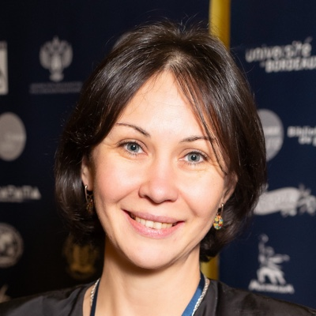
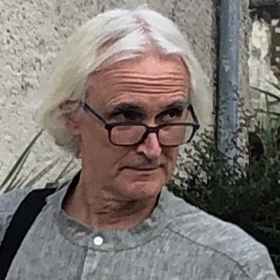
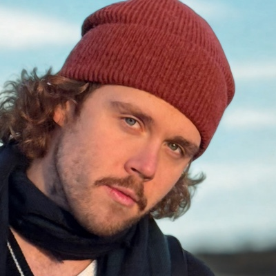
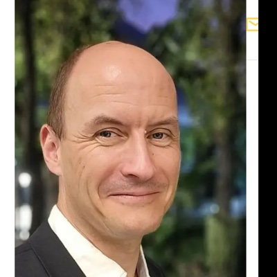
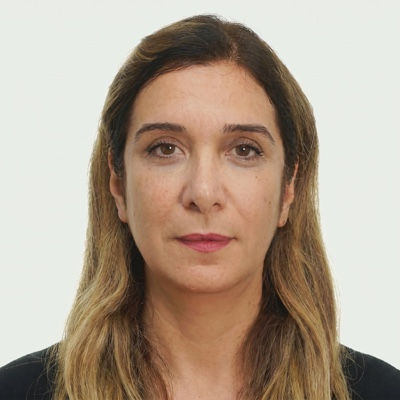
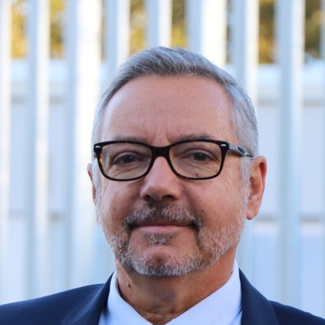
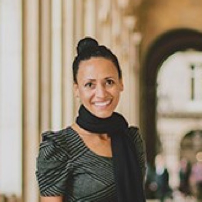
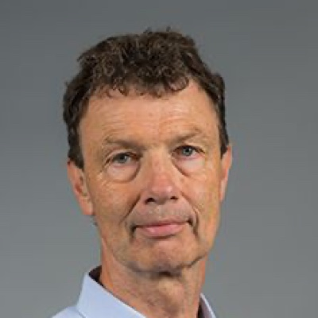
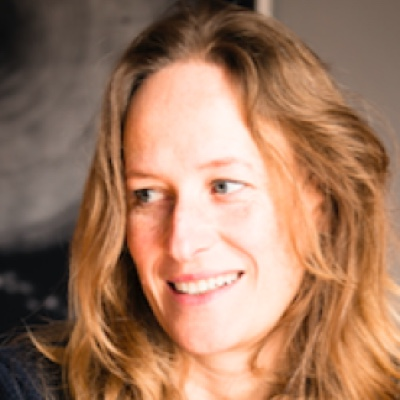
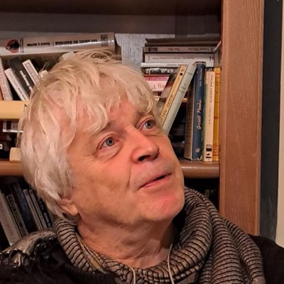

Un projet inter-universitaire incarnant une nouvelle forme d'ingénierie pédagogique innovante fondée sur le design thinking.
Les Rails du Temps est un projet inter-universitaire incarnant une nouvelle forme d'ingénierie pédagogique innovante fondée sur le design thinking.
Le titre du projet joue sur les mots : « Les Rails du Temps » évoque à la fois un itinéraire réel et un lien métaphorique entre les générations, les cultures et les traditions à travers le temps. En traversant différentes villes françaises, les participants découvrent les traces culturelles du passé et du présent tout en explorant les histoires vivantes de celles et ceux dont la créativité façonne les territoires.
Le projet prend la forme d'un carnet de voyage nouvelle génération dans lequel les étudiants conçoivent des itinéraires, réalisent des courts-métrages, mènent des entretiens et rédigent des récits de recherche tout en s'immergeant dans la culture locale, l'innovation et les pratiques créatives.
Transformer les travaux universitaires des étudiants en véritable travail de terrain, au contact des territoires, des entreprises et des acteurs locaux.
Développer l’entretien, la réalisation et la communication interculturelle en documentant de vrais « héros » locaux.
Montrer comment les territoires et les entreprises de toutes tailles portent le changement culturel, économique et écologique.
Faire des étudiants de Génération U les mentors des plus jeunes et partager leurs créations avec le public.
Le projet se déroule en plusieurs phases complémentaires, conçues comme un parcours progressif de transmission, de création et de dialogue intergénérationnel.
Les Rails du Temps – Génération U est la première étape du projet. Elle s'adresse aux étudiants des établissements d'enseignement supérieur partenaires et s'intègre à leur parcours académique.
Les entreprises et personnalités locales deviennent les « héros » des films réalisés par les étudiants et les sujets d'analyses académiques.
Les Rails du Temps – Junior repose sur une approche de transmission intergénérationnelle. Les étudiants de l'enseignement supérieur deviennent tuteurs et médiateurs, accompagnant les collégiens et lycéens tout au long du projet.










Rejoignez nos projets créatifs et éducatifs. Contactez-nous pour en savoir plus sur les opportunités de partenariat.
Contactez-nous